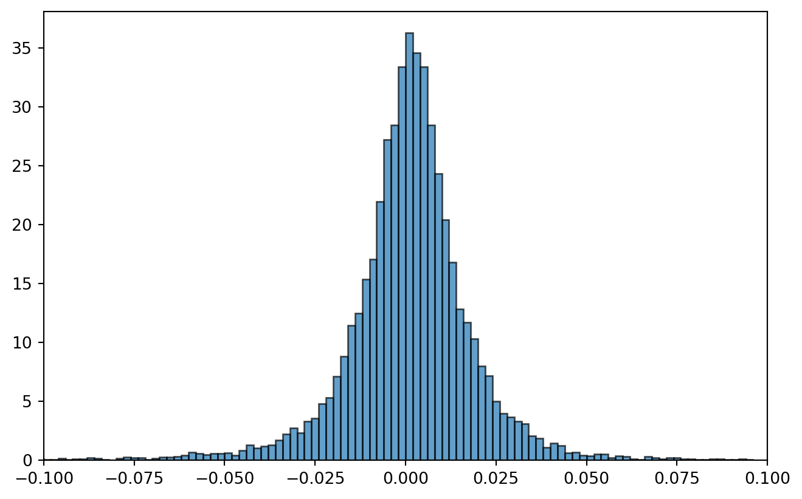

import numpy as np
p = np.array([0.5, 0.2, 0.3])
x = np.array([3,10, 20])
np.sum(p*x)np.float64(9.5)In finance, the utility function is typically defined as the utility derived from a certain amount \(x\). It is generally assumed that greater wealth yields higher utility; hence, the utility function should be increasing, meaning \(U'(x) > 0\). In situations involving risk, such as holding shares with uncertain future values, it becomes useful to calculate the expected utility of a set of possible outcomes \(x_i\) with probabilities \(P(x_i)\) and utilities \(u(x_i)\) (Neumann and Morgenstern 1947).
This builds on the general notion of expectations in statistics. For a set of outcomes \(x_i\) and probabilities \(P(x_i)\), for example, the expected value is \(X=\{ x_0, x_1,\dots,x_n \}\) and is given by
\[ \mathbb{E}[X] = \sum_{i=0}^{N} P(x_i) x_i \tag{1}\]
For example:
import numpy as np
p = np.array([0.5, 0.2, 0.3])
x = np.array([3,10, 20])
np.sum(p*x)np.float64(9.5)In the same way, the discrete expected utility for a set of outcomes \(x_i\) with probabilities \(P(x_i)\) is defined as follows:
\[ U(X) = \mathbb{E}[u(X)] = \sum_{i=0}^{N} P(x_i) u(x_i) \tag{2}\]
where \(P(x_i)\) is the probability that \(X\) assumes the value \(x_i\), and \(u(x_i)\) represents the utility derived if that event occurs.
For example, say utilities 2, -4, and 6 occur with probabilities 0.5, 0.2, and 0.3; then the expected utility is
import numpy as np
p = np.array([0.5, 0.2, 0.3])
u = np.array([2, -4, 6])
U = np.sum(p*u)
Unp.float64(1.9999999999999998)For a continuous distribution, the idea is the same. We multiply each utility state \(u(x_i)\) with the probability it occurs \(f(x)dx\). The integral sign \(\int_{-\infty}^{\infty} \dots ,\) (Leibniz 1969) is the equivalent of a sum for continuous variables. The expected utility is therefore given by:
\[ U(X) = \mathbb{E}[u(X)] = \int_{-\infty}^{\infty} u(x) f(x)\ dx, \tag{3}\]
where \(f(x)\) is the density function of \(X\), such as the normal distribution.
To make this a bit more tangible, let us assume \(f(x)\) represents the standard normal distribution (variance = 1 and mean = 0), and assume we categorize the outcomes \(x\) into five intervals. In Python, we can obtain discrete equivalents of the normal probabilities (Gauss 1809) of a set of intervals in the range -minmax to minmax, each with a width of dx, as follows:
from scipy.stats import norm
dx = 2
minmax = 4
# Define the x range from -minmax to minmax
x = np.arange(-minmax, minmax + dx, dx)
# Calculate the corresponding standard normal distribution,
# where mean = 0 and standard deviation = 1
p = norm.pdf(x, 0, 1)
print(f"Outcomes: {x}")
p_perc = [f"{i}%" for i in np.round(p*100,0)]
print(f"Probabilities: {p_perc}")
print(f"Sum of probabilities: {np.sum(dx*p)}")Outcomes: [-4 -2 0 2 4]
Probabilities: ['0.0%', '5.0%', '40.0%', '5.0%', '0.0%']
Sum of probabilities: 1.014383747758677Probabilities sum by definition to one, but we see that these do not sum to exactly 1.0. This discrepancy arises due to the coarse nature of the discrete categories.
We can use the function plot_descrete_and_normal in the local module utility.py in this repository to visualize the probabilities and the normal distribution:
# Using utility.plot_descrete_and_normal() to plot the discrete
# distribution and the corresponding normal distribution.
from matplotlib import pyplot as plt
import utility
fig, ax = utility.plot_descrete_and_normal(p, x, dx, minmax, plt)As demonstrated above, decreasing the interval size \(dx\) brings the discrete distribution closer to the continuous one. The continuous distribution serves as an approximation when outcomes are real numbers, which is often the case in investment scenarios.
The primary advantage of continuous variables over discrete ones is that we can apply powerful mathematical tools, such as derivatives and integrals, from calculus.
With the discrete distribution given by the probabilities p and values x calculated in Figure 1, we can, for example, calculate the expected value and variance with these probabilities. Since the standard normal distribution was assumed, we would expect the mean to be close to 0 and the variance to be close to 1.
dx = 0.1
minmax = 8
true_mean = 0
true_variance = 1
x = np.arange(-minmax + true_mean, minmax + true_mean + dx, dx)
p = norm.pdf(x, true_mean, true_variance**0.5)
mean = np.sum(p*x*dx)
variance = np.sum(
p*((x-mean)**2)*dx
)
print(f"Numerically calculated mean is: {mean}")
print(f"Numerically variance is: {variance}")Numerically calculated mean is: 5.551115123125783e-17
Numerically variance is: 0.9999999999999498We see that the mean is quite close to zero, but the variance is not that close to one. The likely reason for the latter is the coarse grouping.
Let us now return to the main topic: expected utility theory. A key outcome of this model is that with a concave utility function, an individual will always prefer a guaranteed cash flow over a speculative investment with the same expected return. Consider an individual with an exponential (Euler 1748) utility function:
\[ u(x) = -\mathrm{e}^{-\rho\cdot x} \tag{4}\]
which is increasing and concave, as shown by its first and second derivatives:
\[ u'(x) = -\rho \cdot u(x)>0 \tag{5}\] \[ u''(x) = \rho^2 \cdot u(x)< 0 \tag{6}\]
Suppose there is a 50% chance of \(x=0.5\) and a 50% chance of \(x=1.5\). That is, the possible outcomes are given by \(X = {0.5, 1.5}\), with associated probabilities \(P(X) = {0.5, 0.5}\). The expected value is then \(\frac{1}{2}(-\mathrm{e}^{-\rho\cdot 0.5}-\mathrm{e}^{-\rho\cdot 1.5})\).
Below is the utility function defined as the function u_func(x, rho). It is convenient to also define the inverse of the utility function x_func(u, rho). Assuming \(\rho = 15.0\), we can calculate expected utilities and outcomes as follows:
import numpy as np
# Values and probabilities
x_gamble = np.array([0.5, 1.5]) # Outcomes of the
# gamble
p_gamble = np.array([0.5, 0.5]) # Probabilities
RHO = 5.0
#utility function
def u_func(x, rho):
return -np.exp(-rho*np.array(x))
# We will also need the inverse of the utility function:
def x_func(u, rho):
return -np.log(-u)/rho
# Expected utility
expected_utility = np.sum(p_gamble *
u_func(x_gamble, RHO))
expected_outcome = np.sum(p_gamble *
x_gamble)
utility_exp_outcome = u_func(expected_outcome, RHO)
print(f"Expected utility: {expected_utility}")
print(f"Expected outcome: {expected_outcome}")
print(f"Utility of expected value: {utility_exp_outcome}")Expected utility: -0.04131904149702332
Expected outcome: 1.0
Utility of expected value: -0.006737946999085467By comparing the utility of the expected value of 1.0 with the expected utility, you can verify that the utility of the expected value is greater than the expected utility:
\[ u(\mathbb{E}X) = \mathrm{e}^{\rho\cdot 1} > \frac{1}{2}\mathrm{e}^{\rho\cdot 0.5}+\frac{1}{2}\mathrm{e}^{\rho\cdot 1.5} = \mathbb{E}u(X), \tag{7}\]
This example demonstrates that the utility of a certain outcome \((-\mathrm{e}^{\rho})\) is preferred over the expected utility of a gamble. This preference underscores risk aversion. The situation is illustrated in the following plot:
import utility
fig,ax = utility.plot(RHO, x_gamble, p_gamble, u_func, x_func, plt)The code is a bit too long to be included here but can be found in the local module utility.py in this repository.
As we can see, the utility at expected wealth 1 is about -0.37, while the mean utility is lower at -0.41. You can verify that the line drawn between the utility of 0.5 and 1.5 intersects the mean utility of -0.41.
Hence, with a concave utility function, a person will always prefer a sure amount rather than a bet with the same expected payoff. In this case, the risk-averse investor will invariably prefer the certain payment of 1 over the gamble.
The difference indicated by \(\rho\) in the figure is the certainty equivalence. It is the amount that you would need to compensate the investor in order to take the gamble. In a real market, this is the premium that investors demand to hold risky assets compared to safe bills. It is usually about 2-4% on average for the whole market.
Let us now calculate the expected utility with more than two outcomes. We remember from the calculation of Figure 1 and the calculation of discrete expectations in Equation 2 that a discrete version of the continuous normal distribution can be calculated by taking the sum of probabilities and outcomes. When the outcomes are utilities, we sum over probabilities and utilities for each \(x\). If the utility is \(u(x) = - \mathrm{e}(-\rho x)\) and \(x\) and \(p\) are calculated as above, a discrete approximation to the continuous expected utility, given \(x\) is normally distributed, is
print(f'Approximate expected utility:{np.sum(p*dx*u_func(x, RHO))}')Approximate expected utility:-268031.5499517654The above is a discrete approximation. How do we calculate the exact expected utility? We can find this by integration; see Equation 3. The normal density function is given by
\[ \frac{1}{\sigma \sqrt{2 \pi}}e^{-\frac{(x-\mu)^2}{2 \sigma}} \tag{8}\]
We can calculate the expected utility by taking the integral over the product of the density and the utility function. It turns out that if we do that, we obtain the analytical expected utility function:
\[ \mathbb{E}[u(X)] = \int_{-\infty}^{\infty} u(x) f(x)\ dx = -e^{-\rho(\mu-\frac{1}{2}\rho \sigma^2)} \tag{9}\]
Let us now try to compare this with our approximated expected utility above. If we have a standard normal distribution, so \(\sigma=1\) and \(\mu=0\). The risk aversion coefficient is \(\rho=1\). The exact and approximate expected utility are
RHO = 1
dx = 2
minmax = 4
x = np.arange(-minmax, minmax + dx, dx)
p = norm.pdf(x, 0, 1)
print(f'Exact expected utility:{-np.exp(-RHO*(0-0.5*RHO*1.0))}')
print(f'Approximate expected utility:{np.sum(p*dx*u_func(x, RHO))}')Exact expected utility:-1.6487212707001282
Approximate expected utility:-1.625001554959029As we can clearly see from above, the approximation is not good. The problem is that the discrete normal probability function that we have used is too coarse. We therefore need to try smaller intervals for the bars. Also, we want to calculate a wider range than +/-4. Let us try with a bar width of 0.25 and a range of +/- 8: Figure 3:
RHO = 1
dx = 0.01
minmax = 8
x = np.arange(-minmax, minmax + dx, dx)
p = norm.pdf(x, 0, 1)
fig, ax = utility.plot_descrete_and_normal(p, x, dx, minmax, plt)
expected_utility = np.sum(p*dx*u_func(x, RHO))
print(f'Exact expected utility:{-np.exp(-RHO*(0-0.5*RHO*1.0))}')
print(f'Approximate expected utility:{np.sum(p*dx*u_func(x, RHO))}')Exact expected utility:-1.6487212707001282
Approximate expected utility:-1.648721270698128We see now in Figure 3 that the discrete distribution is quite similar to the continuous one, and the approximation is also very close to the analytically exact expected utility.
The most important lesson here is what is inside the brackets in equation (Equation 9). That expression effectively determines the utility, so let us rewrite it here:
\[ \mu-\frac{1}{2}\rho \sigma^2 \tag{10}\]
This is therefore usually assumed to be the objective function of any investor.
Hence, if returns are normally distributed, then investors would want to maximize the difference between the mean and the variance. This is true for any utility function if returns are normally distributed, but it is not in general true if returns are distributed differently.
With the knowledge from Equation 10, we can actually calculate the optimal level of investment for one risky asset and a risk-free allocation (Tobin 1958). We will later see that the method for doing that is very similar to how we calculate optimal portfolios with many different assets. For now, we will assume we only consider one asset, for example the market index. Say you buy shares for \(w\) NOK. Then, we can use the method in the previous section to find that the expected utility depends on
\[ w\mu-\frac{w^2}{2}\rho \sigma^2 \tag{11}\]
Taking the derivative of Equation 11, which we assume is a concave and increasing function, we get
\[ \frac{d(w\mu-\frac{w^2}{2}\rho \sigma^2)}{dw} = \mu-w\rho \sigma^2 \tag{12}\]
Setting Equation 12 equal to zero and solving for \(w\) gives
\[ w=\frac{\mu}{\rho \sigma^2} \tag{13}\]
From this, we conclude:
In the next lecture, we will extend these principles to portfolios with multiple assets using matrix algebra.
The shape of a utility function critically influences how individuals respond to risk. This subsection discusses three primary types of investors based on their risk preferences and the corresponding shapes of their utility functions. \(\rho>0\).
Risk-Averse Investors: These individuals have concave utility functions, as in the example above, indicating a preference for certain outcomes over uncertain ones with the same expected value. Commonly modelled in financial theory, risk-averse investors prioritise minimising risk over maximising returns. They tend to diversify their portfolios across various asset classes to reduce volatility. Even with the option of unlimited borrowing, they typically opt to limit their investment exposure. \(\rho>0\).
Risk-Neutral Investors: For risk-neutral individuals, volatility is inconsequential. Their utility functions are linear, reflecting indifference to the level of risk associated with any investment. They focus solely on maximising expected returns and are likely to invest in the asset with the highest expected payoff, irrespective of the associated risks. This type of investor is willing to allocate as much capital as possible to maximise potential gains. \(\rho<0\)
Risk-Loving (Risk-Seeking) Investors: Risk lovers have convex utility functions and engage in behaviours akin to gambling, where the expected return is typically negative. They derive satisfaction from the risk itself and often pursue investments that offer the highest possible returns, irrespective of the high levels of risk involved. Such behaviour is commonly seen in speculative ventures and high-stakes gambling. \(\rho=0\)
Interestingly, it is not uncommon for individuals to display traits of both risk-averse and risk-seeking behaviours, a phenomenon that may seem paradoxical. For instance, the same person might purchase insurance (a risk-averse action) while also indulging in lottery gambling (a risk-seeking behaviour). This can be explained by the utility function’s varying shape at different levels of wealth or stakes: a person might be risk-seeking with small, disposable amounts of money but risk-averse with larger, life-impacting sums. This dual nature influences how individuals choose to allocate their investments across different risk levels.
In financial theory, the assumption typically made about market participants is that they are predominantly risk-averse. This assumption is crucial, as portfolio optimisation and related strategies largely rely on this characteristic. Risk-neutral or risk-loving investors, who either disregard risk or actively seek it, are considered exceptions rather than the norm in these models. This foundational assumption allows for the development of investment strategies that aim to maximise returns while minimising risk, aligning with the preferences of risk-averse individuals.
As mentioned, if the distribution of returns is normal, the investor should always maximise the difference between mean and variance. However, if the returns are distributed differently, that is not the case.
It is well known that returns in financial markets are not normally distributed. For example, under the assumption that returns on the Oslo Stock Exchange follow a normal distribution, statistically extreme changes exceeding 10% would be exceedingly rare—estimated to occur once every 17,000 years. Yet, during the 2008 financial crisis, such anomalies were observed twice.
This is called “fat tails”. It means that extreme events are much more likely in actual financial markets than in the normal-distribution world.
However, in most cases, we can represent the empirical distribution with a “mixed normal distribution”. A mixed normal distribution is a linear combination of normal distributions with different means and variances.
import numpy as np
import matplotlib.pyplot as plt
from scipy.stats import norm
#Set range
MAX_MIN = 0.1
x_vals = np.linspace(-MAX_MIN, MAX_MIN, 1000)
# Create the plot using fig and ax
fig, ax = plt.subplots(figsize=(8, 5))
#Calculate mean and std:
rmean = 0
rstd = 0.01
# Normal distribution and mixed normal distribution:
norm_dist = norm.pdf(x_vals, loc=rmean, scale=rstd)
fat_tails = (0.8 * norm.pdf(x_vals, loc=rmean, scale=rstd*0.5)
+ 0.2 * norm.pdf(x_vals, loc=rmean, scale=rstd*2))
# Plotting
ax.plot(x_vals, norm_dist, label="Normal Distribution", color='blue')
ax.plot(x_vals, fat_tails, label="Mixed Normal (Fat Tails)", color='red')
# Set title, labels, and grid and legend
ax.set_title('Mixed Normal Distribution Illustrating Fat Tails')
ax.set_xlabel('X')
ax.set_ylabel('Probability Density')
ax.legend()
Let us examine how empirical returns compare with the normal distribution, and also attempt to fit a mixed normal distribution to the data. We will use data from https://titlon.uit.no to create a histogram and overlay a fitted normal density to assess whether the empirical distribution exhibits heavy (fat) tails. We will then compare this with a simple mixed normal (Gaussian mixture) fit.
We start by fetching data for the OSEBX index from titlon.uit.no.
import pandas as pd
#Query script for MySQL client
import pymysql
con = pymysql.connect(host='titlon.uit.no',
user = "user@uit.no",
password = "pawswordfromtitlon",
database='OSE')
crsr=con.cursor()
crsr.execute("""
SELECT
`Date`, `OSEBXLinked`, `OBXLinked`, `OSEFXLinked`, `ID`
FROM `OSE`.`equityindex_linked`
WHERE year(`Date`) >= 1980
""")
r=crsr.fetchall()
df=pd.DataFrame(list(r),
columns=[i[0] for i in crsr.description])
df
#YOU NEED TO BE CONNECTED TO YOUR INSTITUTION VIA VPN,
#OR BE AT THE INSTITUTION, FOR THIS CODE TO WORK
pd.to_pickle(df,'data/index.df')
df = None #in order to avoid memory problemsWe then calculate the return series and create a histogram of daily returns. The sample mean and standard deviation for the period are also computed to provide a simple summary of the distribution.
import pandas as pd
from matplotlib import pyplot as plt
# loading the data
df = pd.read_pickle('data/index.df')
# Creating the plot using fig and ax
fig, ax = plt.subplots(figsize=(8, 5))
#fixing Date, setting index and calculate returns
df['Date'] = pd.to_datetime(df['Date'])
df.set_index('Date', inplace=True)
df['Returns'] = df['OSEBXLinked'].pct_change()
#Calculate mean and std:
rmean = np.mean(df['Returns'])
rstd = np.std(df['Returns'])
# Define the histogram intervals (dx = 0.01)
dx = 0.002
bins = int((0.2 - (-0.2)) / dx)
# Create the plot
ax.hist(df['Returns'].dropna(), bins=bins,
range=(-0.2, 0.2), density=True,
edgecolor='k', alpha=0.7)
df = None
# Set x-axis limits
ax.set_xlim(-MAX_MIN, MAX_MIN)
Next, we compute the fitted normal and a simple mixed normal using the estimated mean and standard deviation. For the mixture, we choose (by trial and error) an 80% weight on a normal with 40% of the estimated volatility and a 20% weight on a normal with 200% of the estimated volatility.
Both fitted densities are then overlaid on the existing histogram for comparison.
import numpy as np
import matplotlib.pyplot as plt
from scipy.stats import norm
#Defining the range of x-values:
MAX_MIN = 0.1
x_vals = np.linspace(-MAX_MIN, MAX_MIN, 1000)
# Calculate normal dist and the mixed normal dist:
norm_dist = norm.pdf(x_vals, loc=rmean, scale=rstd)
fat_tails = (0.8 * norm.pdf(x_vals, loc=rmean, scale=rstd*0.4) +
0.2 * norm.pdf(x_vals, loc=rmean, scale=rstd*2))
# Plotting normal dist and mixed normal dist
ax.plot(x_vals, norm_dist,
label="Normal Distribution", color='blue')
ax.plot(x_vals, fat_tails,
label="Mixed Normal (Fat Tails)", color='red')
# Set title, labels and legend
ax.set_title('Mixed Normal Distribution'
'Illustrating Fat Tails')
ax.set_xlabel('X')
ax.set_ylabel('Probability Density')
fig